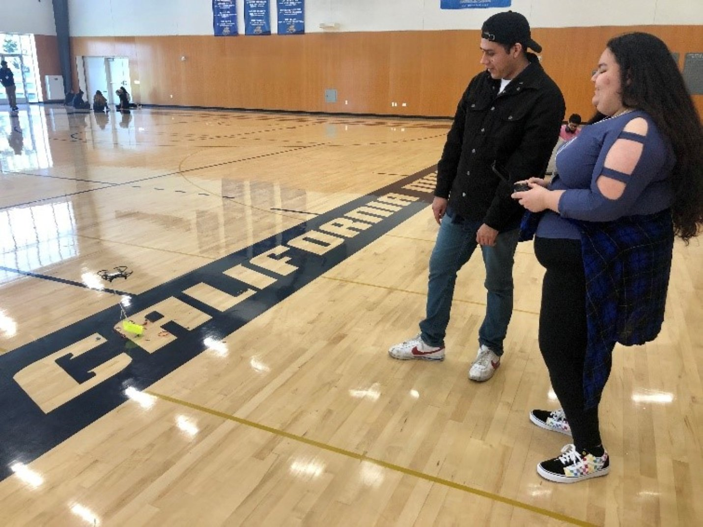

GET YOUR START IN TECH
Get mentoring, experience, and a network of tech-interested peers and friends through weekly meetings and special events. After being a member of the innovative network, ¡Valle! you will:- build experience in research
- gain tech skills and learn cool tools
- increase your confidence
- practice networking skills
- prep application materials and a research portfolio to research experiences, graduate school, internships and jobs
- get insights into the many opportunities open to YOU.
- weekly meetings,
- job coaching with a mentor,
- networking and etiquette dinner practice,
- play with new tools for mapping, data management, and more.
- get insights on applications, and
- connect to CalBridge and other programs.
¡Valle! aims to foster diversity by increasing the accessibility of historically underrepresented students in STEM to research experiences, graduate school, and careers in technology. The program is extended, but not limited, to underrepresented minorities, women, first-generation college students, educationally or financially disadvantaged students, and students with disabilities. First and second year students are encouraged to apply. All applicants will be considered without regard to race or gender.
It’s never too early to get your start in tech. From Silicon Valley to the Central Valley to Yosemite Valley, ¡Valle! will help you to level up!
Apply by December 1 to reserve your spot. And help share the opportunity with colleagues. The goal of the workshop is to increase confidence and applications to research experiences for undergraduate programs, internships, graduate schools and jobs in STEM.
You’ll be supported by a team of UC Merced and Merced College women in STEM and a larger network of STEMinists.
We’ll have fun activities, like watching STEM films, “Appy Hours”—where we all apply to something new, networking events and socials. You’ll also connect with peers across California and the first class of Valle students.